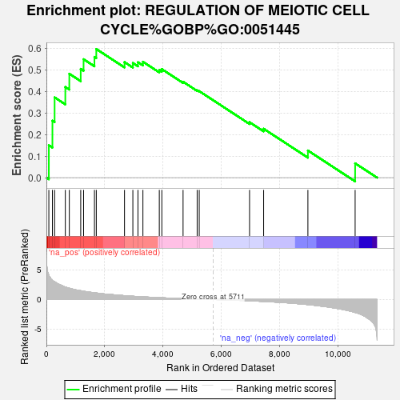

| | | Dataset | deg_ms |
| Phenotype | NoPhenotypeAvailable |
| Upregulated in class | na_pos |
| GeneSet | REGULATION OF MEIOTIC CELL CYCLE%GOBP%GO:0051445 |
| Enrichment Score (ES) | 0.59599334 |
| Normalized Enrichment Score (NES) | 1.6950256 |
| Nominal p-value | 0.0045045046 |
| FDR q-value | 0.7487206 |
| FWER p-Value | 1.0 |
Table: GSEA Results Summary

Fig 1: Enrichment plot: REGULATION OF MEIOTIC CELL CYCLE%GOBP%GO:0051445
Profile of the Running ES Score & Positions of GeneSet Members on the Rank Ordered List
Fig 2: REGULATION OF MEIOTIC CELL CYCLE%GOBP%GO:0051445: Random ES distribution
Gene set null distribution of ES for REGULATION OF MEIOTIC CELL CYCLE%GOBP%GO:0051445